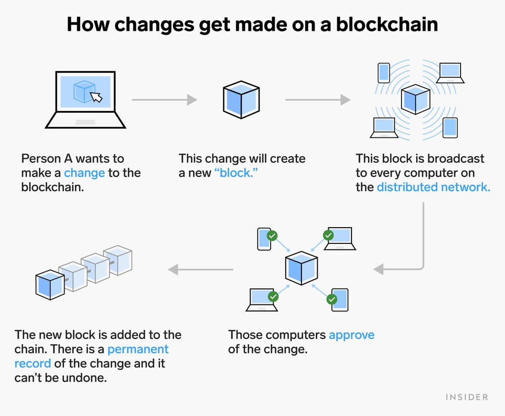

Blockchain
- Traditionally, we perform digital transactions by storing data in a centralised database and the transactions
performed are updated one by one on the database.
However, since all the data is stored on a central location, there are chances of data being hacked or lost.
- The blockchain technology works on the concept of decentralised and shared database where each computer has a full copy of the database.
A block can be thought as a secured chunk of data or valid transaction, which has some data called its header, which is visible
to every other node, while only the owner has access to the private data of the block.
Such blocks form a chain called blockchain.
- This ledger is updated only after all the nodes within the network authenticate the transaction.
Safety and security of the transactions are ensured because all the members in the network keep a copy of the blockchain and it is not possible for anyone to alter the data.

- The most popular application of blockchains technology is in digital or crypto currency.
Blockchains are being seen as one of the ways to ensure transparency, accountability and efficiency in business as well as in governance systems.
This technology can be used in diverse sectors, such as banking, media, telecom, travel and hospitality and other areas.